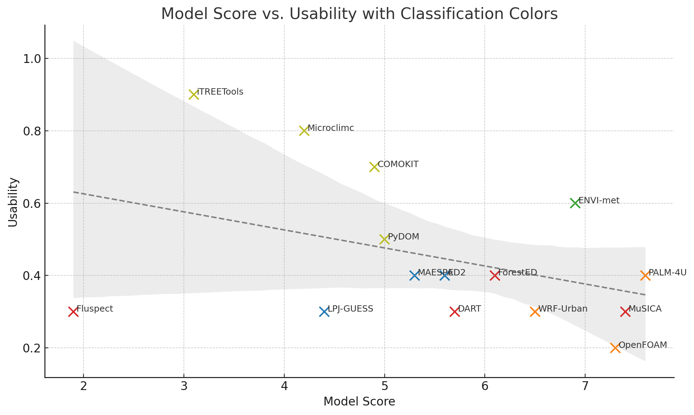

%%{init: {"theme": "default", "themeVariables": { "fontSize": "9px", "nodePadding": "20", "width": "300" }}}%%
graph TD
A[Model Evaluation]
A --> C[Flag Classification]
C --> C1[🟩 High capability + usability<br>Score: 7.0–10.0<br>GUI, docs, user base]
C --> C2[🟧 High capability, low usability<br>Score: 7.0–10.0<br>Expert-only, low maturity]
C --> C3[🟦 Moderate & well-integrated<br>Score: 5.0–6.9<br>Lacks coupling, usable]
C --> C4[🟨 Specialized + usable<br>Score: 4.0–6.9<br>Limited scope, accessible]
C --> C5[🟥 Experimental / niche<br>Score: 4.0–6.9<br>Non-generalizable use]
C --> C6[❌ Legacy / not usable<br>Any score<br>No dev, no workflow]
A --> D[Microscale Applicability]
D --> D1[✅ Fully applicable<br>≤10 m, 3D veg–air coupling]
D --> D2[🟨 Conditionally applicable<br>Partial 3D or physics]
D --> D3[❌ Not applicable<br>Too
coarse or schematic]
style A fill:#f9f,stroke:#333,stroke-width:2px
style C fill:#ccf
style D fill:#ffc
style C1 fill:#cfc
style C2 fill:#ffebcc
style C3 fill:#e0f0ff
style C4 fill:#ffffcc
style C5 fill:#ffe0e0
style C6 fill:#ddd
style D1 fill:#cfc
style D2 fill:#ffffcc
style D3 fill:#eee
Evaluation of Atmosphere–Vegetation Interaction Models
Evaluation of Atmosphere–Vegetation Interaction Models for operational use
Understanding microclimatic and ecological processes at high spatial resolution requires integrated modeling approaches that couple atmospheric dynamics with plant and vegetation processes. The models compared here span a wide range of capabilities, from fluid dynamics solvers to ecophysiological simulators. This document introduces the evaluation criteria, explains the scoring approach, and provides literature references for further exploration.
Objective of the Evaluation
This model comparison aims to evaluate and categorize existing modeling platforms that simulate atmosphere-vegetation interactions, emphasizing realistic deployment, dimensional and structural detail, and biophysical relevance. While many models offer advanced features in isolation, such as turbulence modeling, vegetation physiology, or 3D structural input, only a few integrate these capabilities in a usable and accessible way. This evaluation considers not only modeling power but also technical complexity, scientific maturity, and practical deployability.
- Full 3D support with high spatial resolution
- Integration of real-world vegetation structure from TLS, QSM, or ALS
- Explicit representation of plant–atmosphere feedback (e.g., transpiration effects on local climate)
- Availability of user interfaces, documentation, licensing, and feasibility on common research workstations
Model Evaluation Structure
Scoring Criteria (Max Score: 10.0)
The Evaluation Framework
When selecting a suitable model for simulating interactions between the atmosphere and vegetation, more aspects than just scientific completeness must be taken into account in the context of operationalization. Models differ considerably in their structure, focus, technical maturity, and accessibility. What does this mean? Some models achieve excellent physical accuracy (e.g., LES-based turbulence and complete feedback between plants and the atmosphere) but require in-depth technical knowledge or high-performance computers. Other models, on the other hand, sacrifice physical completeness in favor of practicality and easy integration into planning or monitoring processes.
Our attempt is to enable this multi-criteria assessment and make it comprehensible by means of an evaluation framework in order to arrive at a pre-selection. This is done by combining quantitative assessments with a qualitative classification system, in particular:
- scientific completeness based on various categories
- operational usability
The evaluation is based on clearly defined criteria such as model physics, plant physiology, plant structure, model dimensionality and scales, and user-friendliness. However, the relative weights reflect value-based assessments – what is considered more important depends on the context (urban planning vs. ecohydrology vs. forest micrometeorology). In concrete terms, this means:
In urban planning, user-friendliness and realistic 3D air flows may be paramount.
In plant science, biophysics and physiology may be paramount.
In forestry, compatibility with TLS or QSM inputs may be required.
This is not a weakness, but a strength, as it allows adaptation to the user’s goals – as long as the weighting and criteria are transparent.
Integrated Criteria Table for Atmosphere–Vegetation Model Evaluation (Max Score = 10.0)
| Criterion | Weight | Sub-Capabilities / Description | Scoring Guidelines |
|---|---|---|---|
| Atmosphere | 3.0 | LES/RANS, radiative transfer, soil–vegetation coupling | 1.5–3.0: Full LES or RANS / radiation / soil 0.6–1.4: Partial (e.g., radiation only) < 0.6: Basic or missing physics |
| Structure | 1.0 | Realistic vegetation structure (e.g., QSM/LAD, voxel, TLS-derived) | 0.8–1.0: Full 3D voxel/QSM/tree geometry 0.4–0.7: Schematic trees < 0.4: No or empirical structure |
| Feedback | 1.0 | Biophysical feedback transpiration ↔︎ air | 0.8–1.0: Full coupling 0.4–0.7: Drag or partial interaction < 0.4: One-way/static |
| Physiology | 1.0 | Transpiration, photosynthesis, stomata, water flow | 0.8–1.0: Full physiology 0.4–0.7: Simplified < 0.4: None |
| Usability | 2.0 | GUI/CLI, documentation, install, license, hardware | 1.5–2.0: Documented, user-friendly 0.6–1.4: CLI/complex < 0.6: Legacy/unusable |
| 3D | 2.0 | Full 3D resolution and within-canopy gradients | 1.0–1.9: Full 3D 0.6–0.9: Pseudo-3D 0.3–0.5: Layered < 0.3: None |
The flags “microscale applicable” and “experimental or outdated”
Microscale applicable models can resolve processes on spatial scales of ≤ 10 m. At this scale, air flows, radiation, and microclimate dynamics become relevant at the tree level. These models are typically characterized by the following features:
- They work with high-resolution 3D grids.
- Vegetation is explicitly represented (e.g., voxel- or TLS-based).
- Localized simulations of plots, tree groups, or urban areas are possible.
| Symbol | Microscale Capability Description |
|---|---|
| ✅ | Fully applicable: Designed for a resolution of ≤ 10 m with 3D vegetation–atmosphere coupling. |
| 🟨 | Conditionally applicable: Partial support for high resolutions, but limited physics or geometry. |
| ❌ | Not applicable: Coarse resolution or missing spatial details. |
The following characteristics are flagged with an ❌ for experimental or obsolete models:
- no longer maintained or widely used.
- they were developed for niche applications or obsolete use cases.
- there is a complete lack of user-friendly workflows or adequate documentation.
| Flag | Label | Implied Score |
Explanation of the Classification |
|---|---|---|---|
| 🟩 | High capability, high usability | 7.0–10.0 | Fully featured and deployable with reasonable effort (GUI, docs, user base) |
| 🟧 | High capability, low usability | 7.0–10.0 | Powerful but difficult to use; expert-only setup, low maturity |
| 🟦 | Moderate capability, well-integrated | 5.0–6.9 | Solid for many tasks; lacks advanced coupling but usable and balanced |
| 🟨 | Specialized model, high usability | 4.0–6.9 | Limited scope (e.g. radiation only), but very accessible and documented |
| 🟥 | Experimental or niche | 4.0–6.9 | Limited audience or non-generalizable application |
| ❌ | Legacy/unmaintained/ not usable | any | No active development or practical use case today |
Note: This classification does not always correspond to the ranking by score, which is intentional. For example, a model with a high score may still be marked with 🟧 or ❌ if it is technically difficult to implement, is not documented or maintained, or is simply no longer available. This helps to put the pure scoring performance into perspective, which would otherwise lead to the selection of models that prove to be unusable in practice.
Atmosphere–Vegetation Model Comparison of Models
Fifteen models were systematically evaluated based on the assessment framework presented above. The models were selected on an exploratory basis using Google searches, specialist literature (e.g., GMD Geoscientific Model Development, ScienceDirect), well-known model comparisons, and open-source repositories. The selection is therefore well-founded but not entirely systematic. The following tables shows the results of this evaluation. It not only shows the weighted overall score, but also differentiates between the underlying individual criteria. In addition, the applicability in the microscale range is indicated and each model is classified using a color-coded classification system. This makes the performance of a model in terms of the atmosphere-vegetation coupling transparent and shows the extent to which a model can be realistically integrated into scientific or operational processes.
Atmosphere–Vegetation Model Evaluation (Criterion-Level Justification)
| Model | Score | Atmosphere Physics | Structure | Feedback | Physiology | Usability | 3D | Microscale Capabilities | All | Micro Scale |
|
|---|---|---|---|---|---|---|---|---|---|---|---|
| 1 | PALM-4U | 7.6 | 1.0 Full LES and radiative transfer; no soil–water coupling |
0.8 Static 3D vegetation model |
0.7 Air–vegetation drag interaction |
0.3 No explicit physiology |
0.4 Complex install, Linux only; well documented |
1.0 Fully resolved CFD |
LES solver at meter-scale; used in urban microclimate studies <10 m; limited physiology, strong flow–structure resolution | 🟧 | 🟩 |
| 2 | MuSICA | 7.4 | 0.8 Soil–plant-atmosphere exchange; no LES or radiative transfer |
0.6 Layered cohort model, not voxel-based |
1.0 Detailed biophysical feedback |
1.0 Includes transpiration, photosynthesis, stomata, water dynamics |
0.3 Legacy Fortran, hard to install |
1.0 1D canopy model |
etailed canopy and physiology; vertical 1D, not voxel; grid spacing cohort-based | 🟥 ❌ | 🟨 |
| 3 | OpenFOAM | 7.3 | 2.5 LES/RANS CFD; partial radiation support |
1.0 Porosity/drag approach for tree structure |
0.5 Customizable feedback via coding |
0.0 No vegetation physiology |
0.2 Expert use only, CLI |
1.9 Full 3D CFD |
CFD model with <1 m resolution; porosity drag; physiology via coding | 🟧 | 🟩 |
| 4 | ENVI-met | 6.9 | 0.8 RANS turbulence and radiation; no soil coupling |
0.6 Blocky trees, parametric structure |
0.4 Basic one-way coupling |
0.3 Simplified energy–water exchange |
0.6 GUI, documented, PC-compatible |
1.0 Pseudo-3D (layered) |
Grid 0.5–2 m; urban canopy focus; simplified structure | 🟩 | 🟩 |
| 5 | WRF-Urban | 6.5 | 0.9 Urban-scale RANS + radiation; coarse resolution |
0.7 Urban and vegetation layering |
0.6 Bulk vegetation–atmosphere interactions |
0.2 No individual physiology model |
0.3 HPC-heavy, complex setup |
1.0 Grid-based, some canopy effects |
Urban RANS, VEGE3D coupling; no true <10 m flow+veg | 🟧 | 🟨 |
| 6 | ForestED | 6.1 | 0.9 Radiation balance only |
0.8 TLS-derived trees, but limited structural detail |
0.5 Weak air interaction |
0.3 No detailed physiology |
0.4 Prototype, no GUI |
1.0 Real 3D from TLS |
Full 3D via TLS; radiation only, no flow coupling | 🟥 ❌ | 🟩 |
| 7 | DART | 5.7 | 0.6 Radiative transfer simulation, no air dynamics |
1.0 Voxel-based structural import |
0.0 No air–plant feedback |
0.2 No physiology |
0.3 Complex setup, technical barrier |
1.0 Radiative 3D |
Radiative voxel model <1 m; no airflow or feedback | 🟥 ❌ | 🟩 |
| 8 | ED2 | 5.6 | 0.7 Surface energy and hydrology; no LES |
0.5 Functional cohort-based |
0.6 Partial feedback, not dynamic |
1.0 Rich physiology, plant hydraulics |
0.4 Command-line only, heavy model |
0.5 Vertical layers, no 3D |
Cohort-based; no individual trees or microclimate | 🟦 | ❌ |
| 9 | MAESPA | 5.3 | 0.4 No LES or full RANS |
0.5 Elliptic crown geometries |
0.5 Simple coupling (transpiration ↔︎ air temp) |
1.0 Includes water and stomatal response |
0.4 CLI, old Fortran |
0.8 Layered or semi-3D |
Tree-level radiation, no fluid; stand-scale design | 🟦 | ❌ |
| 10 | PyDOM | 5.0 | 0.5 Solar irradiance modeling using discrete ordinates method; no fluid dynamics |
0.6 Uses simplified canopy layers or volumes; structure inferred |
0.0 No biophysical feedback |
0.3 No physiology model |
0.5 Script-based usage; moderately usable |
1.0 Volumetric but low-resolution |
Voxelized solar DOM; no air coupling | 🟨 ❌ | 🟨 |
| 11 | COMOKIT | 4.9 | 0.4 No atmosphere simulation; only agent-level heat/energy accounting |
0.3 Simplified static vegetation |
0.5 Agent-based feedback loops via scenario definition |
0.5 No continuous transpiration or photosynthesis, only thermal behavior |
0.7 Accessible GUI, easy scenario logic, extensive documentation |
0.5 Visual pseudo-3D, no physical gradients |
Agent-based; no physical coupling; coarse graphics | 🟨 | ❌ |
| 12 | LPJ-GUESS | 4.4 | 0.7 Energy and gas exchange with climate integration; no internal 3D resolution or LES |
0.4 Functional PFTs with vertical profiles, no explicit geometry |
0.4 Climate–vegetation coupling, but coarse |
0.9 Complex physiology model with stomatal control, photosynthesis |
0.3 CLI-based ecosystem model, config-heavy |
0.0 No 3D, grid-cell aggregated PFT composition |
DGVM, no 3D, coarse PFT representation | 🟦 ❌ | ❌ |
| 13 | Microclimc | 4.2 | 0.6 Radiative energy balance and temperature with simple terrain effects; no CFD or LES |
0.3 Schematic trees only, no voxel or lidar structure |
0.4 One-way: vegetation affects energy balance, no feedback from air |
0.4 Simple transpiration and energy fluxes only |
0.8 R-based, documented, GUI-like interface |
0.5 Layered canopy modules, semi-3D |
1–5 m radiation/temp; schematic trees; no LES | 🟨 | 🟨 |
| 14 | iTREETools | 3.1 | 0.3 No atmosphere model; static inventory system |
0.2 Tree inventory tables only; no geometry |
0.2 None; no feedback, no fluxes |
0.0 No physiology modeling |
0.9 Very accessible GUI, well supported |
0.0 No 3D; inventory only |
Empirical inventory; no spatial simulation | 🟨 ❌ | ❌ |
| 15 | Fluspect | 1.9 | 0.1 Leaf-scale radiative simulation; no atmosphere |
0.0 No spatial structure |
0.0 None |
1.0 Detailed leaf spectral and biochemical simulation |
0.3 Niche tool, standalone use; requires integration |
0.0 No 3D; single-leaf model |
Leaf-level only; no domain or airflow | 🟥 ❌ | ❌ |
Based on the upper table, the below graph helps visualize the trade-off between model capability and usability, making the multi-dimensional classification system intuitively accessible at a glance.

Final Selection of Models
If we narrow the selection by removing models that are either classified as legacy systems (❌ ) or that lack both microscale applicability (❌) and fully resolved 3D spatial representation (<1.0), the set of viable modeling platforms is drastically reduced. This filtering excludes tools that are either outdated, lack dimensional realism, or are designed for coarse-scale applications incompatible with high-resolution vegetation–atmosphere modeling. What remains is a focused set of platforms that combine scientific robustness with operational feasibility for modeling processes at the tree or plot level. These remaining models offer realistic support for implementation in urban microclimate design, LiDAR-informed ecological studies, and vegetation-based climate adaptation strategies where 3D feedbacks and spatial structure matter.
| Rank | Model | Score | Atmosphere | Structure | Feedback | Physiology | Usability | 3D | All | Micro Scale |
|---|---|---|---|---|---|---|---|---|---|---|
| 1 | PALM-4U | 7.6 | 1.0 – Full LES, radiation, no soil | 0.8 – Static vegetation models | 0.7 – Basic interaction | 0.3 – No physiology | 0.4 – Complex setup, Linux only, docs | 1.0 – True 3D | 🟧 | 🟩 |
| 2 | OpenFOAM | 7.3 | 2.5 – Full LES/RANS, partial radiation | 1.0 – Porosity/drag approach | 0.5 – Feedback via coding | 0.0 – None | 0.2 – CLI, expert only | 1.9 – Full CFD | 🟧 | 🟩 |
| 3 | ENVI-met | 6.9 | 0.8 – RANS, radiation | 0.6 – Block trees only | 0.4 – Weak one-way coupling | 0.3 – Simplified transpiration | 0.6 – GUI, docs, runs on PC | 1.0 – Pseudo-3D layering | 🟩 | 🟩 |
| 4 | WRF-Urban | 6.5 | 0.9 – RANS, radiation | 0.7 – Layered urban/vegetation | 0.6 – Bulk interaction | 0.2 – None | 0.3 – HPC, not easily usable | 1.0 – Grid-based | 🟧 | 🟨 |
| 5 | Microclimc | 4.2 | 0.6 – Radiation and temp model, no LES | 0.3 – Schematic trees | 0.4 – Indirect surface coupling | 0.4 – Empirical transpiration | 0.8 – GUI, documentation, R integration | 0.5 – Semi-3D canopy layer | 🟨 | 🟨 |
Sorting applied:
Primary: Microscale applicability (✅ > 🟨 > ❌)
Secondary: Total Score (descending)
Literature and Sources by Model
to be completed
ENVI-met
- Bruse, M., & Fleer, H. (1998). Simulating surface–plant–air interactions inside urban environments with a three-dimensional numerical model. Environmental Modelling & Software, 13(3–4), 373–384.
- ENVI-met Documentation: https://envi-met.info/
PALM-4U
- Maronga, B., et al. (2020). Overview of the PALM model system 6.0. Geoscientific Model Development, 13, 1335–1372. https://doi.org/10.5194/gmd-13-1335-2020
- https://palm-model.org/
MuSICA
- Ogée, J., et al. (2003). MuSICA, a CO2, water and energy multilayer, multileaf model for the analysis of function of vegetation at the canopy scale. Ecological Modelling, 156(2–3), 181–204.
OpenFOAM (custom vegetation)
- Gromke, C., & Blocken, B. (2015). CFD simulation of near-field pollutant dispersion including vegetation effects. Atmospheric Environment, 100, 238–249.
- The OpenFOAM Foundation Hom
WRF-Urban
- Chen, F., Yu, B., Wu, M., Yang, X., et al. (2021). Improved urban finescale forecasting during a heat wave by using high-resolution urban canopy parameters. Frontiers in Climate, 3, 771441. https://doi.org/10.3389/fclim.2021.771441
- Martilli, A., Nazarian, N., Krayenhoff, E. S., Lachapelle, J., Lu, J., Rivas, E., Rodriguez‑Sanchez, A., Sanchez, B., & Santiago, J. L. (2024). WRF‑Comfort: Simulating microscale variability in outdoor heat stress at the city scale with a mesoscale model. Geoscientific Model Development, 17, 5023–5039. https://doi.org/10.5194/gmd-17-5023-2024